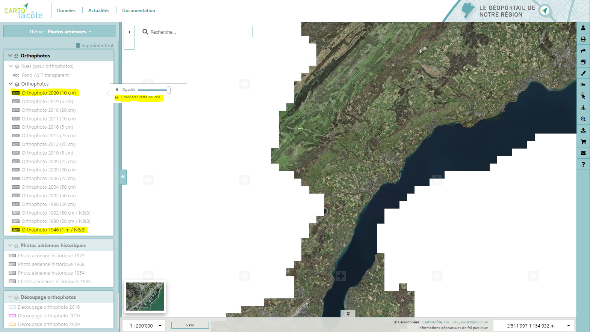
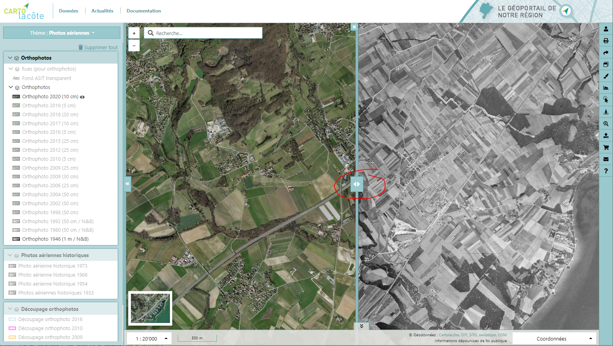

Données¶
Fonds de plan¶
Le choix du fond de plan se fait à l’aide de la liste de vignettes se trouvant en bas à gauche de l’interface. Les plans disponibles sont :
Aucun
Plan de ville
Plan cadastral
Plans ASIT VD
Carte nationale
Carte swissTLM
Plan de ville (gris)
Plan ASIT VD (gris)
Carte nationale (gris)
Carte swissTLM (gris)
Photo aérienne en transparence (avec le curseur)
Pour connaître la date de mise à jour des données utilisées comme fonds de plan, il suffit de placer le curseur de la souris sur le copyright
OIT : Données cadastrales (VD)
SITG : Données cadastrales (GE)
Swisstopo : Photos aériennes
OSM : Données OpenStreetMap
Thèmes¶
Les données sont réparties dans différents thèmes classés alphabétiquement, accessibles depuis le sélecteur de thème qui se trouve en haut à gauche de l’interface.
Les thèmes disponibles sont affichés selon les autorisations de l’utilisateur connecté car certaines données ne sont pas publiques et nécessitent une authentification. Vous pouvez consulter la liste des données disponbiles via l’url suivante cartolacote.ch/donnees
Organisation des couches¶
Une fois le thème sélectionné, les données, qui peuvent être réparties dans différents groupes, sont ajoutées dans l’arbre des couches à gauche et sur la carte. Différentes opérations sont possibles sur les groupes de couches et les couches elles-mêmes, selon ce tableau récapitulatif :
Action |
Icône |
Groupe |
Couche |
|---|---|---|---|
Activer / désactiver |
X |
X |
|
Afficher les métadonnées |
X |
X |
|
Afficher / masquer la légende |
X |
||
Comparer |
X |
X |
|
Zoomer sur le seuil d’affichage |
X |
||
Changer l’affichage temporel |
X |
||
Modifier la transparence |
X |
X |
|
Monter / descendre |
X |
||
Supprimer |
X |
Comparaison¶
L’outil de comparaison permet de comparer deux cartes différentes, pour cela il faut activer deux couches et cliquer sur l’engrenage visible au survol du nom de la première couche activée. Cliquer ensuite sur « Comparer cette couche ».
Une barre verticale apparaît au milieu de la carte. Afin de déplacer ce curseur vertical, il suffit de cliquer dessus et de déplacer la souris à gauche ou à droite.
